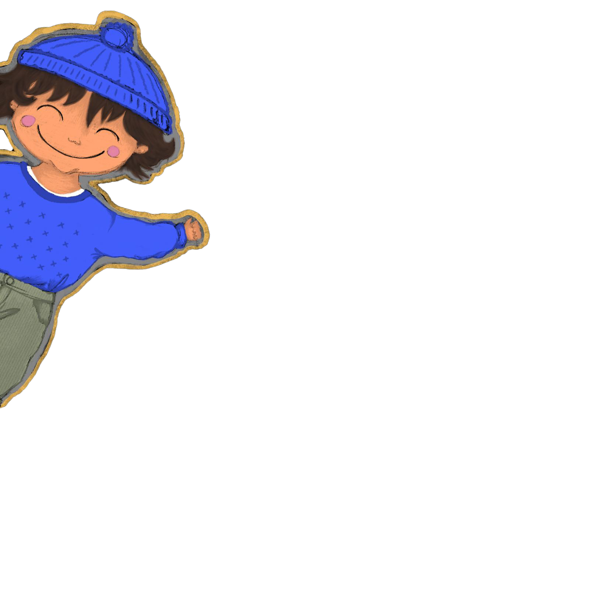

L'idea & La Mascotte
In arabo, Hekayat Saleh significa "Le storie di Saleh". Per dare una vera identità al brand, ho creato da zero su Procreate il personaggio di Saleh, la mascotte ufficiale della libreria. L'ho poi integrato in tutto il sito per rendere la navigazione più accogliente, personalizzata e memorabile per i lettori.

*Nota sul progetto
Il video qui sotto mostra la homepage e le sue funzionalità interattive; il resto del sito è attualmente in fase di completamento e sviluppo!
Cosa ho realizzato:
- UX & Anteprima Interattiva: Ho inserito nella homepage dei libri con pagine "sfogliabili", così gli utenti possono curiosare all'interno del libro ed farsi un'idea prima di acquistare.
- Storytelling & Community: Ho curato una sezione "Chi Siamo" per raccontare la storia dietro la libreria e avvicinare i clienti al brand, affiancata da una sezione dedicata alle recensioni.
- E-commerce & Inventario (Wix): Ho sviluppato la struttura e-commerce organizzando un catalogo completo con filtri avanzati (per genere, lingua, editore, fascia d’età e promozioni) per rendere la ricerca semplice e intuitiva.